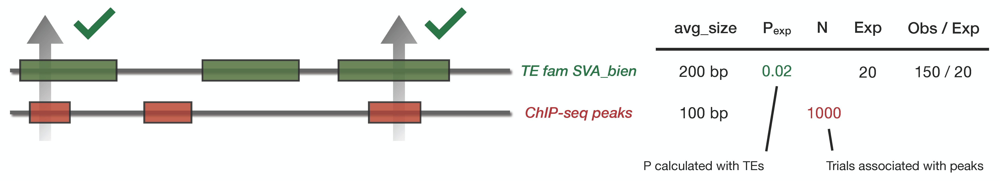

Detailed methods¶
Binomial Model
The enrichment is performed using a binomial test. The binomial test is an exact test of the statistical significance of deviations from a theoretically expected distribution, considering two possible outcome. In our case : TE overlap with peak (success) or do not overlap (failure). The statistical hypothesis is :
where \(p_{exp}\) is the ratio of genome occupancy of each TE family. \(p_{exp}\) is therefore the expectation based on genome occupancy, and \(p_{obs}\) is the observed overlap. Since the probability of having k successes from n trials is given by
We can calculate the probability to have at least k success by suming up probabilities, from k success to n success. As often the number of success is on the low edge, we prefer to compute the inverse probability :
This probability is our p-value of having at least k success, given a probability p for the overlap, and n trials.
Assumptions
The binomial model itself comes with its associated assumptions :
The n trials are mutually independent. The trials, in the case of ChIP-seq peaks, as not really independant. Considering the large size of the genome, this assumption seems reasonable.
The probability of a given outcome is the same for all n samples. We assume that the probability to touch a given TE family/subfamily is the same for each peak (or input sequence) at each trial.
The only source of variation is simple random and binomial. This assumption should be correct for the expected overlap we compute from genome occupancy.
Adjustment of p-values
To correct for multiple testing, p-values obtained above are adjusted with the Benjamin-Hochsberg method. The following formula define our adjusted p-value \(P_{adj}(i)\) for the ith ranked p-value :
with \(m\) being the total number of test and \(k\) the rank of the p-value.
Two possible comparisons¶
From our perpective, there is a few additional assumptions to be taken into account :
We assume that the ratio of genome occupancy corresponds to the expected probability if we would random shuffle sequences. As we are dealing with intervals and not single base pair, the probability might be biased by interval length.
How to reduce bias
One of the possibility is to provide input bed files with 1 base-pair size (for instance, peak summits from ChIP-seq). This would force the comparison peak_in_te below and allow a non-biased calculation of \(P_{exp}\).
If it is not possible, pyTEnrich will choose one out of two different comparisons, depending on the average sequence size in groups that are compared. The goal being to always compare the smallest against the highest, to minimize the error we make when calculating \(P_{exp}\).
Also, bedtools intersect options -f 0.5 -F 0.5 -e forces the center of the smallest sequence to be inside the largest. This allows the center of sequences to behave almost as a 1 base-pair input.
peak_in_te
This comparison is used whenever the average size of peaks (or regions in bed files) are smaller than the TE group we wish to compare to. We use the ratio of genome occupancy of TE groups as our \(p_{exp}\) the number of loci in the input bed file as \(n\).
Mock example
TE family SVA_bien is 200 base pair in average, and our input bed files has intervals of 100 base pairs in average. SVA_bien covers 2% of the genome. Therefore \(p_{exp} = 0.02\). The input bed file has 1000 loci, we therefore expect \(n \cdot p_{exp} \approx 20\) sequence in the overlap.
Let’s say we observed 150 peaks in our input bed file overlap with SVA_bien. We calculate a p-value of 1e-38 and a fold change of 7.5 between the expected overlap (=20) and the observed overlap (=150).
te_in_peak
Here we use the reverse comparison, whenever the input regions are bigger than a TE family/subfamily average size. We use the ratio of genome occupancy of input regions as our \(p_{exp}\) the number of loci in the TE group as our \(n\).
Mock example
TE family AluJoke is 100 base pair in average, and our input bed files has intervals of 1000 base pairs in average. Input region covers 0.1% of the genome. Therefore \(p_{exp} = 0.001\). The family AluJoke has 100’000 loci, we therefore expect \(n \cdot p_{exp} \approx 100\) sequence in the overlap by chance.
Let’s say we observed 140 in the overlap. We calculate a p-value of 0.13 and a fold change of 1.4. The overlap is not significant.